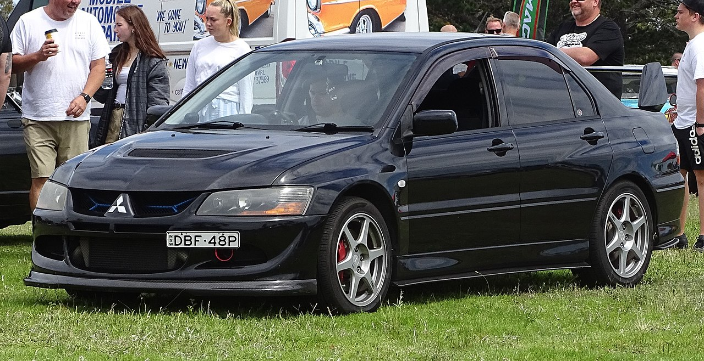
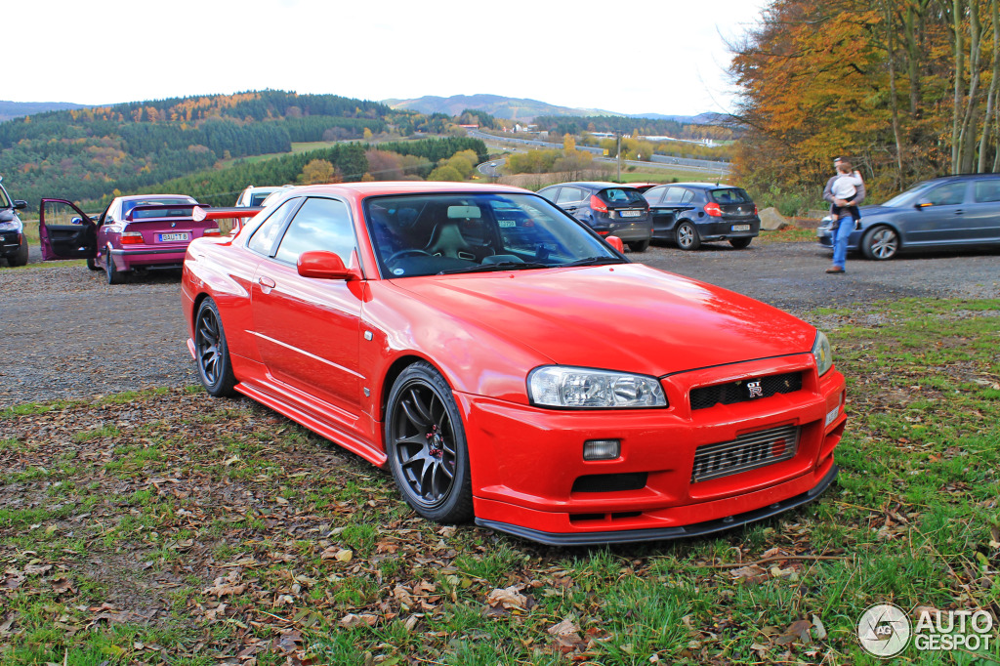

The Mazda RX-7 is a front-engine, rear-wheel-drive, rotary engine-powered sports car that was manufactured and marketed by Mazda from 1978 until 2002 across three generations, all of which made use of a compact, lightweight Wankel rotary
engine.
The first generation of the RX-7, SA (early) and FB (late), was a two-seater 2 door hatchback coupé. It featured a 12A carbureted rotary engine as well as the option for a 13B with electronic fuel injection in later years.
The second generation of RX-7, known as the FC, was offered as a 2-seater coupé with a 2 option available in some markets, as well as in a convertible bodystyle. This was powered by the 13B rotary engine, offered in naturally aspirated or
turbocharged forms.
The third generation of the RX-7, known as the FD, was offered a 2 seater coupé with a limited run of a 2-seater option. This featured a sequentially turbocharged 13B REW engine.
More than 800,000 were manufactured over its lifetime
Series 1 (produced from 1978 until 1980) is commonly referred to as the "SA22C" from the first alphanumerics of the vehicle identification number. Mazda's internal project number for what was to become the RX-7 was X605. In Japan it was
introduced in March 1978, replacing the Savanna RX-3,
and joined Mazda's only other remaining rotary engine-powered products,
called the Cosmo which was a two-door luxury coupé, and the Luce luxury sedan.
In Japan, sales were enhanced by the fact that the RX-7 complied with the Japanese Government dimension regulations, and Japanese buyers were not liable for yearly taxes for driving a larger car. The rotary engine had financial advantages to
Japanese consumers in that the engine displacement remained below 1,500 cc (1.5 L), a significant determination when paying the Japanese annual road tax; this kept the obligation affordable to most buyers while having more power than the
traditional engines having a straight cylinder configuration.
Mitsubishi Evolution VII

The Mitsubishi Lancer Evolution VIII appeared in 2003 this time sporting 17-inch grey Enkei wheels,
Brembo brakes and Bilstein shocks to handle traction and a 5-speed manual gearbox with 280 PS (206 kW; 276 hp) (approx. 234 bhp (237 PS; 174 kW) to the wheels).
Originally a one-off model, sales were so successful in the U.S. that by 2005 it was available in four trims.
The standard GSR model was available in Japan. The RS model was provided with a 5-speed manual gearbox and standard wheels (lacking excess components, such as interior map lights,
power windows/doors, and radio). The SSL trim package came with a sunroof, trunk mounted subwoofer,
and leather seats. All of these trim levels also included chrome headlight and taillight housings.
To round out the lineup, the MR came with a revised front limited-slip differential, aluminum MR shift knob, handbrake with carbon fibre handle, 17-inch BBS wheels,
aluminum roof, and a 6-speed manual gearbox.
The Mitsubishi Lancer Evolution VIII MR used slick-response Bilstein shocks for improved handling.
The aluminium roof panel and other reductions in body weight lowered the centre of gravity to produce more natural roll characteristics.
Detail improvements have also been made to Mitsubishi's own electronic four-wheel drive, to the ACD 5 + Super AYC 6 traction control,and to the Sports ABS systems.
The Lancer Evolution VIII displayed at the 2003 Tokyo Motor Show took the MR designation traditionally reserved for Mitsubishi Motors high-performance models (first used for the Galant GTO).
Other parts on the MR include BBS alloy wheels, the aforementioned Bilstein shocks, and an aluminium roof.
the United Kingdom, many special Evolutions were introduced, including the 260, FQ300, FQ320, FQ340, and FQ400 variants. They came with 260, 305, 325, 345, and 405 hp (194, 227, 239, 254 and 302 kW), respectively.

La Skyline R34 est un véhicule sportif haut de gamme à volant à droite existant en coupé 2 portes et en berline 4 portes. Elle est souvent retenue pour la déclinaison GT-R (BNR34),
à ne pas confondre avec la Nissan GT-R, un modèle de supercar n'appartenant pas à la gamme Skyline.
Cette génération de Skyline a été majoritairement commercialisée au Japon, à l'exception de quelques modèles GT-R (BNR34) importés officiellement dans quelques pays tels que le Royaume-Uni et l'Australie.
La Skyline R34 a été remplacée en 2002 par la Skyline V35, vendue aux États-Unis et en Europe sous la marque Infiniti, avec le modèle G35/37/25.
GT Berline (HR34) - Transmission à 4 roues motrices, moteur RB20DE NEO (2,0 L).
Manuelle : 155 ch (114 kW) à 6 400 tr/min et 186 N m à 4 400 tr/min pour 1 360 kg.
Automatique : 155 ch (114 kW) à 6 400 tr/min et 186 N m à 4 400 tr/min pour 1 380 kg.
GT Coupé (HR34) - Transmission à 4 roues motrices, moteur RB20DE NEO (2,0 L).
Manuelle : 155 ch (114 kW) à 6 400 tr/min et 186 N m à 4 400 tr/min pour 1 330 kg.
Automatique : 155 ch (114 kW) à 6 400 tr/min et 186 N m à 4 400 tr/min pour 1 380 kg.
25GT Berline (GF-ER34) - Transmission aux roues arrière, moteur RB25DE NEO (2,5 L).
Manuelle : 200 ch (147 kW) à 6 000 tr/min et 255 N m à 4 000 tr/min pour 1 370 kg.
Automatique : 200 ch (147 kW) à 6 000 tr/min et 255 N m à 4 000 tr/min pour 1 400 kg.
25GT Coupé (GF-ER34) - Transmission aux roues arrière, moteur RB25DE NEO (2,5 L).
Manuelle : 200 ch (147 kW) à 6 000 tr/min et 255 N m à 4 000 tr/min pour 1 340 kg.
Automatique : 200 ch (147 kW) à 6 000 tr/min et 255 N m à 4 000 tr/min pour 1 370 kg.
25GT-X Berline (GF-ER34) - Transmission aux roues arrière, moteur RB25DE NEO (2,5 L).
Automatique : 200 ch (147 kW) à 6 000 tr/min et 255 N m à 4 000 tr/min pour 1 400 kg.
25GT-T Coupé (GF-ER34) - Transmission aux roues arrière, moteur RB25DET NEO (2,5 L).
Manuelle : 280 ch (205,7 kW) à 6 400 tr/min et 350 N m à 3 200 tr/min pour 1 410 kg.
Automatique : 280 ch (205,7 kW) à 6 400 tr/min et 350 N m à 3 200 tr/min pour 1 430 kg.